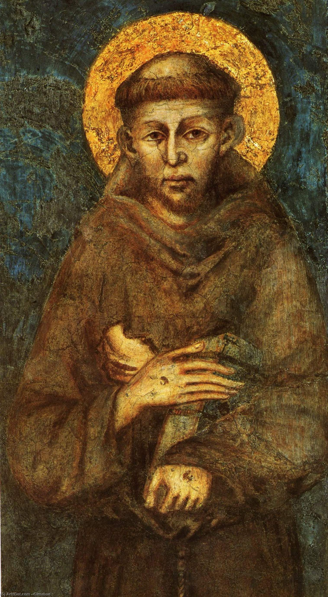
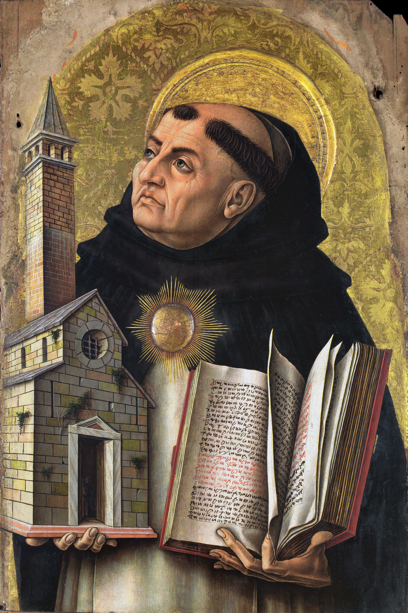
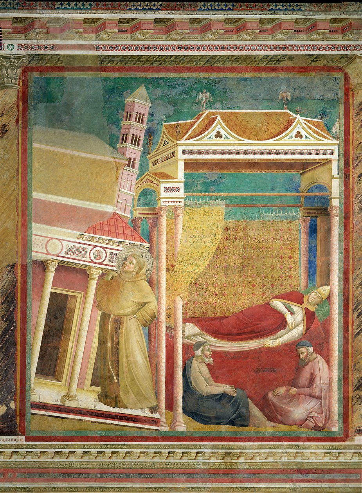
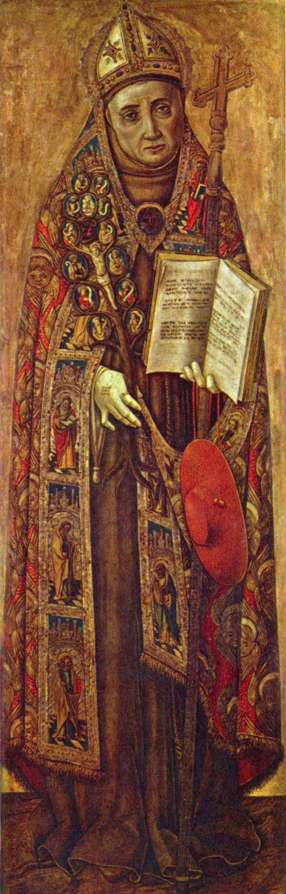
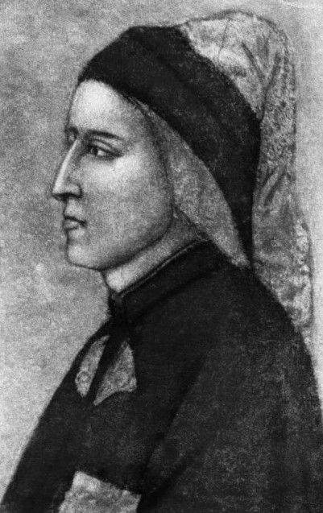
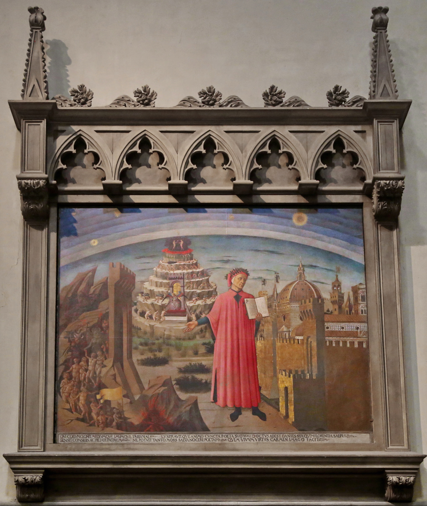
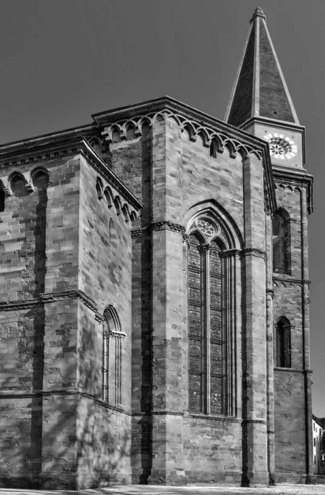
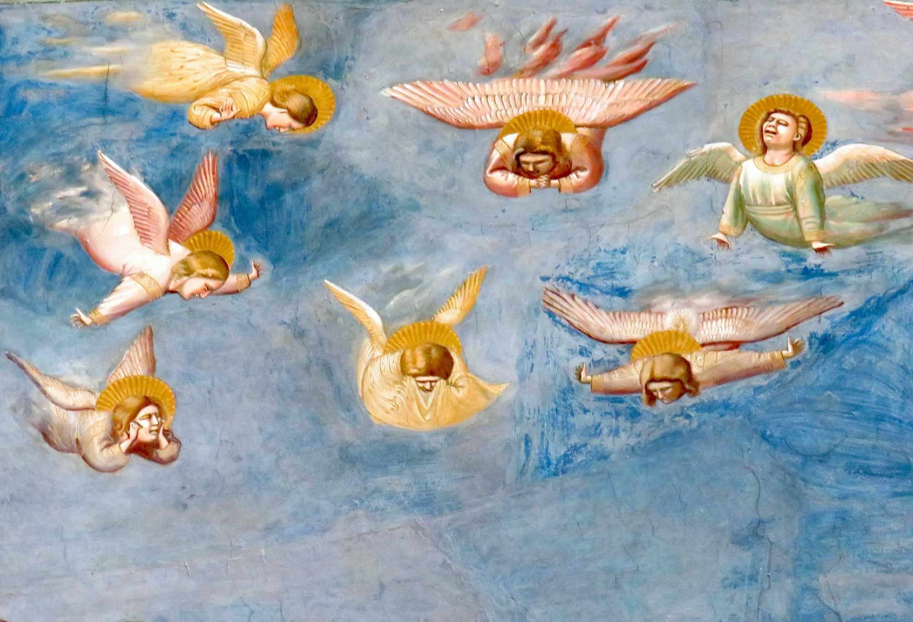
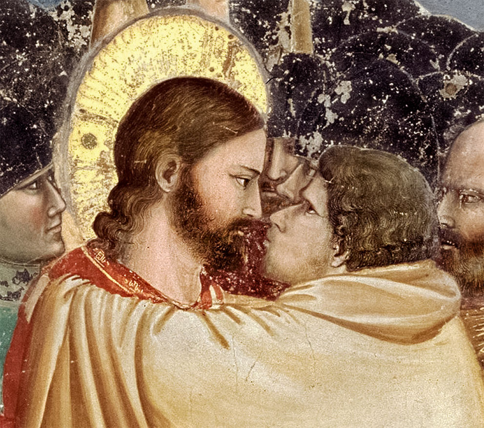

Capítulo 8
El genio y la filosofía
¿De quién es la mano, fugaz como la llama,
que me guía por los caminos de la pasión?
Bajo el pie no siento la resonante llama,
sino el murmullo de las aguas proféticas.
M. Voloshin
Y los muros de la sombría prisión
tan solo con la fuerza de la vida
apartábamos ante nosotros.
M. Voloshin
Francisco de Asís y Giotto di Bondone
En medio del mundo
Caminaba descalzo, cubierto tan solo con un sayal, por el bosque. La nieve caía en copos. Y él seguía avanzando hacia un destino ignoto, tras abandonar la casa paterna, y cantaba. Cantaba a Dios, al amor, al amor apasionado y no carnal, universal, hacia los hombres, Dios, la tierra, las aves y las hierbas.
___________________
1 «Florecillas de san Francisco de Asís» (traducción de A. Yelcháninov), San Petersburgo, 2006, pág. 336.
No temía a nada, no calculaba nada; su corazón rebosaba de Dios y de poesía. Se llamaba Giovanni Bernardone y era el hijo único de un rico mercader de paños y otras telas de la ciudad de Asís, en Umbría.
Giovanni Bernardone —joven impresionable y refinado— era carne de la carne de la suave poeticidad que lo envolvía, la de su Umbría natal.
El azul desvanecido de los cielos, la silueta delicada de las colinas, la lozanía de la floración temprana en los cuadros de Rafael, Perugino y Piero della Francesca. El talante entero de la tierra toscana —tierna y joven, pero a la vez firme y misteriosa— favorecía al activo genio poético de estos lugares. Entonces, en el umbral de los siglos XII y XIII, surgió la moda de la lírica cancionesca, amorosa y religiosa, de los bardos errantes, menestreles y juglares llegados de Francia. Las comparsas y los teatros de feria vagaban de un lugar a otro en los días de fiesta y de mercado. Pero especialmente populares eran los juglares, que todo lo sabían hacer: cantar, caminar sobre las manos y ser, o parecer, un poco locos de Dios. La leyenda del «Juglar de Nuestra Señora» la conocían todos. Un joven que no sabía ni oraciones ni letras amaba con pasión, con todo su corazón, a la Purísima Virgen. Probaba su servicio ejecutando cabriolas y cantando plegarias-canciones de propia cosecha. Una vez, en sueños, la Purísima se le apareció y, en señal de benevolencia, cubrió a su hijo con su manto, lo acarició con una sonrisa, con el resplandor de unos ojos de pureza celestial. Al joven Giovanni le encantaba esa leyenda. Era la cultura cortés de una época impresionable y turbulenta. Giovanni era joven y participaba con todo su ser de la vida: cantaba, amaba los versos, amaba las reuniones. Lo apodaron Francesco, es decir, «el afrancesado». Difícil es decir si es verdad, pero así lo afirma el inglés Gilbert Chesterton en su libro «San Francisco de Asís».
Desde joven, Francesco fue, como se dice, un temerario: hacía juergas, guerreaba y no se andaba con miramientos en el dinero. Era, con todo, vanidoso y quería ser el primero en todo. Al partir de casa para la guerra, gritó a voz en cuello en la plaza, de modo que todos lo oyeran: «¡Volveré como un gran caudillo!». En ese desafío se adivina al descendiente de los antiguos latinos, con su ineludible formación clásica y su amor a las citas de los clásicos. Las «Máximas de César» se las sabían de memoria los mozos de las buenas familias, pero no cualquiera podía prometer a voces que llegaría a ser un gran caudillo. Los combates, por entonces, nunca llegaron a producirse. Giovanni Bernardone regresó a Asís enfermo. Aquella fue la primera señal del cielo, el punto de inflexión del «Camino». En sueños oyó las palabras del Evangelio de Juan: «…mi paz os doy; no os la doy como el mundo la da…» (Jn 14:27).
Aquellas palabras adquirieron un significado fatídico. En primer lugar, desde entonces Giovanni ya no estaba bajo el poder de su padre terrenal, sino solo del Padre Celestial, que lo había escogido como su emisario. Llegó el tiempo de la libertad frente a las autoridades terrenales: «…no os la doy como el mundo la da…». En segundo lugar, estaba llamado desde lo alto a dar a los hombres «mi paz». ¿«Mía»? ¿De quién? Al parecer, de aquel que se le apareció en sueños con las palabras del Evangelio de Juan. ¿O «mía», es decir, ya no de Giovanni Bernardone, sino de Francisco de Asís?
Francisco no era un arbitrario: entre los hombres era libre, y ante Dios, servidor.
Aquel tiempo turbulento convoca a radicales de toda laya, incluidos los santos nuevos. No todo ni siempre puede explicarse. La época de la que hablamos reclutaba a gente de una índole especial: verdaderos caudillos espirituales, poseídos por las ideas de la transformación de la conciencia y del espíritu. Surgieron caracteres apasionados, desprovistos del instinto de conservación, «pasionarios» en la definición literal que dio Lev Gumiliov. Claro que todo puede explicarse, pero al mismo tiempo nada puede explicarse. ¿Por qué se le escapa a nuestra atención una época de fenómenos nuevos tan hondos? El «culto mariano», unido al culto de adoración a la «dama gentil», la reina platónica de los guerreros peregrinos y de los poetas. ¿El canon de la «coronación de la Virgen», la imagen de rubias angélicas de labios encendidos y una rosa sobre el pecho? «Ya existía» antes de la época del Renacimiento. El culto a «Nôtre-Dame», como ya hemos dicho, fue creado por santos escolásticos como el enclenque cisterciense Bernardo, y no por la bohemia artística y sensual del siglo XV. Y al mismo tiempo fue precisamente Bernardo de Claraval quien castró al gran Abelardo, el cantor de Eloísa, intelectual y apasionada amante del sabio… No es, a fin de cuentas, una novela de Balzac, sino su precursora. Bernardo, cuya alma era el purgatorio de la lucha entre la luz y las tinieblas, fue canonizado apenas veinte años después de su muerte, en 1174.
En 1234 fue canonizado el monje español Domingo de Guzmán Garcés. Había nacido en el seno de una familia de hidalgos españoles en 1170 y murió en Italia, en Bolonia, en 1221. La orden de los dominicos (los «perros del Señor») ocupaba un lugar importante en la vida política y cultural de Europa. Seguidor de Domingo fue Alberto Magno (1193–1280), reconocido como Doctor de la Iglesia. Su actividad está ligada a las universidades de Padua y de París, a Ratisbona (de la que fue obispo) y a Colonia, donde murió. Sus escritos sobre cuestiones de teología, filosofía, filología clásica y alquimia suman 38 volúmenes. Alberto Magno se postraba de reverencia ante Aristóteles, era un verdadero investigador de la naturaleza y, lo que es muy importante, un sistematizador. Sus trabajos sobre botánica, geografía, mineralogía, la acción de los volcanes y muchos otros no han perdido vigencia en la ciencia contemporánea. Asombra el universalismo del sabio combinado con la devoción ferviente del dominico católico.
Discípulo de Alberto Magno fue Tomás de Aquino (1225–1274). Tomás de Aquino compuso un comentario a la «Biblia» y doce tratados sobre Aristóteles, libros sobre Cicerón, el sabio árabe Avicena y el judío Maimónides. Tomás de Aquino reunió sus obras en dos folios: la «Suma de filosofía» y la «Suma de teología». Se ocupó de los problemas del conocimiento y de la psicología, y sus trabajos sobre el intelecto «pasivo» y el «activo» siguen interesando hoy. Escribió sobre la diferencia entre el conocimiento científico y la «revelación sobrenatural», es decir, sobre lo mismo que escribimos nosotros ahora. Sobre aquello que puede y no puede enseñarse. Santo Tomás de Aquino comprendía con nitidez la diferencia entre la enseñanza y el don innato. Traducido al lenguaje conceptual de hoy, esto significa que en el Instituto de Literatura es imposible, por muchos esfuerzos que se hagan, enseñar a alguien a ser Pushkin. ¿Un helenista y dominico, un místico escolástico y pensador moderno en el siglo XIII? Sostuvo una disputa con san Buenaventura, franciscano y fiel seguidor de san Francisco, sobre el ser de Dios y sobre las pruebas de ese ser.

San Francisco de Asís. Fresco obra de Giotto di Bondone.
San Buenaventura —¡he aquí la paradoja!— murió de ascesis, es decir, de agotamiento y de inanición, siendo cardenal del papa y general de la orden franciscana. Él, como Tomás de Aquino, fue un sabio polifacético, un hombre de intereses universales: conocía la Antigüedad, cultivó la alquimia, creó (mucho antes de Paracelso) medicamentos.
A diferencia de los santos letrados, los intelectuales de su tiempo, Francisco no fue un intelectual. No escribió obras científicas. Fue poeta: escribió versos y canciones sobre Dios y su creación. No «ascendía» hacia la erudición, sino que «descendía» hacia la pureza y la ingenuidad de la infancia. En ello estaban su singularidad y su inmensa fuerza. Aquella misma «lágrima de niño» de la que escribió Dostoievski, porque en la cultura nada puede perderse.
Y el mito galés, precisamente en ese tiempo, en la frontera de los siglos XII y XIII, engendra la realidad de la historia del rey Arturo, el caballero ideal, engendra la utopía del cáliz del Grial. Y sin embargo, si hemos de evocar a los ascetas espirituales del tiempo, a los «dioses del lugar», hoy es san Francisco quien abre las «puertas de oro» del Renacimiento al encarnar la imagen de una personalidad libre, apaciguadora y poderosa, de un hombre de armonía y de responsabilidad. A diferencia de los demás ascetas espirituales de su época, Francisco no era social, no dependía de la sociedad: era libre y caminaba derecho hacia la meta de crear «su mundo», sin contar con la realidad social. Sin abrigo, sin hogar alguno, era como una hoja arrebatada por el viento. Mendigo, sin nada, incluso sin una muda de ropa, fue célebre y venerado no menos que los papas y políticos de su tiempo. Y hay un secreto de su notoriedad y popularidad ya en vida, de su «centralidad»: la extraña combinación de «pequeñez, menor que lo visible» y de gigantismo, de renunciamiento y de vanidad.
Cuando en 1220 san Francisco llegó con doce «hermanos» (calculando con exactitud, sin calcular nada) a Roma, al palacio de Letrán, ante el papa Inocencio III, este, que ya lo conocía de oídas, se quedó pasmado. Ante el resplandeciente soberano se alzaba un mendigo sucio y descalzo. La leyenda cuenta que el Papa «lo mandó a los cerdos». Fue un insulto, pero Francisco lo entendió todo al pie de la letra y fue humildemente junto a los cerdos. Esa misma noche el Papa soñó que la basílica de Letrán se derrumbaba y que el mendigo de la víspera la apuntalaba con su hombro. (Este episodio lo representan con frecuencia los artistas en la pintura hagiográfica de san Francisco.)
Cuando, a la mañana siguiente, el mendigo, todavía más sucio y maloliente, compareció de nuevo ante el Papa, la cuestión de la fundación de la «Orden de los hermanos mendigos errantes» estaba resuelta y sancionada con bula papal, y la Regla de la futura orden ya estaba escrita. Francisco no dudaba de su victoria.
Mota de polvo de Dios, asceta mendigo y sin hogar, que se alimentaba de sobras, se llamaba a sí mismo «heraldo del Gran Señor», y también «el que se regocija en el Señor» y «bufón del Señor». El «bufón del Señor» salió a la escena de Italia como portavoz de Dios: todos lo escuchaban y todos le obedecían. Porque verdaderamente había sido elegido «el que se regocija en el Señor», él mismo lo sabía y sabía inculcarlo en todas las personas sin distinción de su significación social: del bandido al papa, del leproso al ricachón. He aquí la democracia ante los ojos del Señor, y he aquí a Francisco, su emisario. Sus contemporáneos, en celdas-gabinete, en laboratorios; y él, en la escena abierta, sobre las tablas del mundo.
Hacia 1207, Francisco recorría los alrededores de Asís pidiendo «por amor de Cristo» no pan, sino piedras. Francisco nunca pidió limosna de pan ni de dinero. Con las piedras restauró la arruinada capilla de la Santa Virgen llamada Porciúncula y vivió junto a ella en una choza ruinososa. «No os procuréis oro, ni plata, ni cobre en vuestros cinturones; ni alforja para el camino, ni dos túnicas, ni calzado, ni bordón» (Mt 10:9-10). Arrojó el bordón y se ciñó una cuerda. El «bufón del Señor» había adquirido desde entonces su imagen clásica. A la pregunta «¿Qué agrada al Señor: la oración o la predicación?», dio su respuesta: se hizo predicador.
Hace ya tiempo que es costumbre dividir la biografía de san Francisco en periodos. A cada periodo lo antecede un acontecimiento, un signo. El primero fue la partida de la casa paterna. Dejarlo todo, renunciar a todo, marcharse y, en sayal, cantar bajo la nieve. ¡Qué imagen tan teatral! Qué le vamos a hacer: Francisco expresa en la teatralidad su carácter nacional, su gesto nacional. Todo es muy serio y teatral a la vez. Una teatralidad patente en todo y a la vista: he aquí que enseña a las aves, he aquí que expulsa a los demonios de Arezzo; es un diálogo con los contemporáneos, un diálogo de influjo psicológico sobre ellos. En ello están la fuerza y la singularidad de san Francisco. Es actor de un escenario abierto, desbordado, de un gran espacio. Él está en el centro.
Al paso a la nueva etapa —la predicación, los vagabundeos, el abrazo del mundo con ímpetu indómito y con sonrisa de niño— lo precedieron la inmersión en el silencio, la vida eremítica, la cueva.
Ya más de una vez hemos hablado de lo que es la cueva. Es siempre el lugar sagrado del nuevo nacimiento o de la transfiguración total. De la cueva no se sale: se aparece bajo un nuevo aspecto. La cueva donde Francisco se guareció dos años (hasta aproximadamente 1209) es hoy lugar ineludible de peregrinación y atracción turística de la Toscana.
La cueva de san Francisco se encuentra en La Verna, no lejos de la casa donde nació Miguel Ángel. Junto a ella, una iglesia adornada con paneles y esculturas de la gran familia de ceramistas-artistas della Robbia. La cueva se abre en un pequeño «jardín del Edén», donde florecen las rosas, murmura el arroyo santo y revolotean las aves. A la cueva puede uno acercarse y hasta, de algún modo, apretarse para entrar, pero resulta imposible hacerse una idea real de la vida en ella. Francisco amaba su ascesis y su pobreza como el rico ama el dinero y el epicúreo los goces de la vida. Se embriagaba de desasimiento y de libertad. Y allí donde él se hallaba, siempre y para siempre, el perfume del Edén.
Es una paradoja. Está desnudo, y es modesto y callado. Y, con todo, todo retiñe en timbales, arde en cobre, murmura en la fama. Ni uno solo de los lugares donde pisó el pie del predicador mendigo, donde se detuvo, cavó un pozo, dejó la señal de su estancia, se ha perdido. Podría proponerse un itinerario: «Por los caminos de san Francisco». Nunca cayó en el olvido. A su clara y misteriosa sombra van ya más de 800 años.
San Francisco tuvo su propia dama gentil. ¡El amor celestial: santa Clara! Clara era asimismo originaria de Asís. Tenía diecisiete años cuando Francisco, digámoslo así, raptó a Clara de la rica casa paterna. La variante por completo clásica de cualquier novelle de «los tiempos galantes». Recordemos al contemporáneo de Giovanni Bernardone (san Francisco), el francés Pedro Abelardo, teólogo y sabio, que sedujo a su discípula, la bella Eloísa. ¡Qué castigo tan severo sufrieron ambos por su pecado! Ambos acabaron su vida en el monasterio, no del todo voluntariamente, digamos. Abelardo fue castigado además con la privación de la virilidad, es decir, castrado. El hombre por cuya orden fue castrado Abelardo: Bernardo de Claraval. Los enemigos jurados llegaron a hacerse incluso amigos al final de sus vidas. Un eunuco no es socialmente peligroso. He aquí las «pasiones y miserias» del siglo XII.
No así san Francisco. Difícilmente algún otro santo tuvo semejante «dama gentil»:
(M. Voloshin)
Clara, por fuerza de espíritu, por constancia, por fe, era igual a san Francisco. Las damas gentiles de los señores terrenales… Uta, arrebujada en su largo manto, a la espera del caballero Ekkehart. Damas inventadas y reales de la cultura caballeresca. Las Donnas y las Musas de la poesía y de la pintura de las épocas venideras nacieron de la imaginación y del genio de los creadores. Clara fue realidad. Ella es la compañera de armas de la nueva misión del predicador.
Clara, fugada de su casa, se hizo discípula espiritual y compañera de Francisco. En la noche de la fuga, sus siluetas se dejaban distinguir contra la hoguera en la colina próxima a Asís. Partieron el pan y hablaron de Dios. Y jamás sombra de duda sobre la alta misión, ni burlas, ni chismes, ni malas interpretaciones. Luego se unió a Clara su hermana menor. El amor celestial es siempre más fuerte que el amor terrenal. Clara no sentía las penalidades cotidianas. Como Francisco, amaba la privación, la pobreza, la castidad y el hambre exactamente igual que otros aman los atavíos, la holgura y la lujuria. Gracias a san Francisco, Clara creó su propia orden monástica femenina. Es la orden de las clarisas, que vive y prospera hasta hoy. Su regla, redactada por santa Clara (a las clarisas a veces se las llama la segunda orden de san Francisco), traía muchas novedades. Las clarisas se concentraron en la enseñanza del canto, de las labores manuales y de los menesteres domésticos. La vida de las clarisas, estricta según la regla, era variada y misericordiosa. Las hermanas de la caridad tienen su origen en los monasterios de las franciscanas.
Una vez san Francisco, que pensaba en grande, decidió detener las Cruzadas y convertir a los musulmanes al cristianismo. Sin pensárselo dos veces, se lanzó a Siria, llegó al cuartel general de la Cruzada junto a la fortaleza sitiada de Damieta y encontró enseguida el campamento de los infieles. Habló con el sultán y creía muy sinceramente haber convencido al sultán y a su corte de abrazar el cristianismo y el bautismo. Milagro fue su regreso con vida. Aquel acto insensato estaba plenamente en el espíritu del «laúd del Señor». No pensaba en el peligro ni en el fracaso. Francisco era un hombre libre, y esa libertad y esa democracia él la pro-
puso a su época. No estás atado a nada más que al voto ante el Señor; estás igualmente presto a ayudar a todos y a comprender a todos. Por eso Francisco no dudó en ninguna de sus hazañas. Amor y comprensión mutua ofrecía a su tiempo. Para Francisco todos eran hermanos, y creó la orden de los «hermanitos franciscanos». Hermanito, hermanita: sus palabras predilectas del habla cotidiana. Siempre alegre y cortés, amable con todos sin excepción. Sin excluir a los pequeños hermanos y hermanitas: las liebres, las aves, la población del bosque.
«Amigo liebre», «amigo asno». Pedía perdón a la gata. Una vez, dispuesto a predicar en el bosque donde cantaban los pájaros, se dirigió cortésmente a ellos: «Hermanitas mías, avecillas, si ya habéis dicho lo que queríais, dejad hablar también a mí». Y todas las aves callaron, cosa que creemos sin reservas. Dios es igual en su amor a sus criaturas.
Al siglo de las Cruzadas, de la guerra universal de todos contra todos, de la crueldad y de la traición, san Francisco —con la ingenuidad de un niño, la voluntad de un guerrero y la determinación de un político— opuso la bondad plena y universal, la sonrisa tierna, la palabra «hermanitos». Y el mundo atendía a su palabra. Tuvo partidarios. Los poderes sonreían la ingenuidad de sus utopías, pero apoyaban esa resistencia a la destrucción. El mundo, para él como para el poeta y el santo, era luminoso, puro e íntegro.
Una vez, cierto noble llamado Orlando de Chiusi, con tierras en la Toscana, hizo a san Francisco regalo de un monte. Era el monte Alverno, en los Apeninos. Las reglas de la orden prohibían aceptar dinero, pero de los montes no decían nada. San Francisco aceptó el monte. Subía al monte para orar y ayunar, y no llevaba consigo a nadie. Y allí, en circunstancias extrañas, tuvo la aparición de un serafín.
El monte, igual que la cueva, son las señales del destino de los elegidos. La cueva es el vientre de la tierra, el lugar del nuevo nacimiento. El monte es la vertical, el eje del mundo, la cercanía del cielo, la ascensión. La cueva (el pesebre) es el lugar del nacimiento de Jesús. La luz del monte Tabor es el lugar de la Transfiguración. Francisco, por así decirlo, repite —no copia, sino reproduce— la vida del Salvador. Él es la sombra y el laúd del Soberano. La corrección del camino de los justos. Asciende al monte y queda «en medio del mundo». En medio del mundo en la tierra, entre los hombres, los animales, las aves, los árboles. Y en la cima del Alverno, que está ella misma en medio, en el centro del mundo. Precisamente allí recibió la señal de la comunión indiscutible con el Maestro. El solitario Francisco fue allí traspasado y se hundió en el éxtasis; al volver en sí, vio en sus palmas las huellas de los clavos. Eran los estigmas del Señor crucificado. «Y me abrió el pecho con la espada, y me arrancó el corazón palpitante»: esto escribió Pushkin del serafín que se le apareció «en el desierto tenebroso». La aparición del serafín al poeta es la definición última, la postrera precisión de la forma del poeta-profeta.
Tras recorrer venciendo su Camino durante toda la vida, hacia el final de ella exclamó: «¡Nunca, nunca traicionéis estos lugares! Adondequiera que vayáis, dondequiera que os extraviéis, volved siempre a casa»2.
___________________
2 Ibídem. «Florecillas de san Francisco de Asís» (traducción de A. Yelcháninov), San Petersburgo, 2006, pág. 436.

Santo Tomás de Aquino. Cuadro obra de Carlo Crivelli.
«Concede que yo siembre amor en los corazones coléricos,
que lleve la gracia del perdón a los que odian,
que reconcilie a los que riñen,
que fortalezca con la fe a los que dudan,
concede que yo haga renacer con la esperanza a los desesperados,
que colme de alegría a los afligidos» —
esta oración por la paz la escribió san Francisco de Asís, en el siglo Giovanni Bernardone.
Bernardo de Claraval, igual que santo Domingo, fue en el mundo un político de decisiones previsoras. San Francisco estrechó en un abrazo el mundo entero de lo creado, invocando la «clemencia para los caídos». Su divisa fue el llamamiento al amor, al respeto, a la cortesía, a la fraternidad. Y mientras caminó por la tierra, le pareció que así era todo en efecto. Lev Tolstói, el príncipe Gautama, Gandhi, Francisco, el doctor Schweitzer: moraron en este mundo, dando al eje terrestre el grado de inclinación necesario.
Sin embargo, tras la muerte de san Francisco, sepultado en su patria, en Asís, la orden atravesó tiempos y turbaciones diversos y perdió la pureza que portaba aquel hombrecito de sayal ceñido con una cuerda. Y ya no acudían volando las hermanitas-avecillas, ni llegaban el hermanito lobo y el hermanito liebre. La memoria del genio portentoso y del excéntrico se fue cubriendo de vidas y leyendas; sus hechos fueron descritos muchas veces, y en el mundo quedaron para siempre su imagen y el rastro de su surco.
Tras la muerte de san Francisco, muchas cosas cambiaron. Los hermanos discutían en qué dirección avanzar. Aunque, en fin, es lo corriente: muerto el líder, la grey queda sin guía. La orden es mendicante, y los monasterios, ricos. En este caso nos interesan algunos seguidores de Francisco, no la orden entera.
Personalidad indudablemente sobresaliente fue Buenaventura (del que ya hemos hablado), canonizado por Sixto IV en 1482 (en el siglo, Giovanni Fidanza). Teólogo sutil, alquimista, Buenaventura fue el «generalísimo» de la orden de los franciscanos y se atenía a una ascesis tan estricta que se dijo que murió de agotamiento siendo ya no solo cabeza de la orden, sino cardenal de Gregorio X. San Buenaventura comprendía hondamente la tesis de la fraternidad entre las lenguas, de la comprensión y del oído espiritual recíproco entre hombres de lenguas diversas. Estudiando las principales lenguas llegó a ser lingüista y traductor. Las traducciones dan a conocer, hermanan a los pueblos, incorporándolos a los valores espirituales de una cultura ajena. Entre otras cosas, Buenaventura tradujo un texto árabe sobre el viaje de ultratumba del profeta Mahoma, en compañía del arcángel Yibril, por el infierno. Dante Alighieri conocía bien ese texto popular en la traducción de Buenaventura. De modo que la actividad traductora es franciscanismo de pura cepa. Buenaventura, asceta y teólogo, se entregaba empero con entusiasmo a los experimentos de obtención de la piedra filosofal. La piedra no la obtuvo, pero sí polvos curativos: es decir, fue médico y boticario, y sanaba a la gente.
Los sabios franciscanos, consecuentes en su búsqueda de los caminos de la unión, se distinguían de su líder, radicalmente antiintelectual e intuitivo. Pero, penetrando la esencia de la doctrina, eran hombres «del mundo en el mundo».
El monje-asceta franciscano padre Olivieri (toscano) llegó al Tíbet en el siglo XVII. Y desde entonces hasta hoy queda establecido el «gran camino» de los monjes tibetanos hacia Italia, donde son populares y despliegan una amplia actividad de fomento, asunto del que podría escribirse una investigación aparte: «El catolicismo franciscano y el taoísmo tibetano».
Y ya en nuestros días, en 1933, el hermano Antonio Farmuzzi, director del instituto arqueológico franciscano de Florencia, dirigió en Jordania la búsqueda del monte bíblico desde cuya cumbre ascendió a los cielos el profeta Moisés. Los arqueólogos hallaron el monte Nebo, crearon allí un museo, demostraron la historicidad del lugar. Y, terminado el trabajo, regalaron toda su obra al estado de Jordania y se volvieron a casa. Para que nada estorbara la labor, habían comprado antes, con el dinero reunido, un terreno con el monte desconocido para todos; y, concluido todo el ciclo de trabajos, entregaron el monte Nebo y se marcharon. Ya hemos dicho que el monte es siempre el medio del mundo. La cima es un punto, y en torno, la panorámica; y tú estás en el centro, o mejor dicho, en medio del mundo. Cuando estás sobre la cima del monte Nebo, no cabe duda de que precisamente desde ese punto partió hacia el que lo envió a la tierra el profeta Moisés. El franciscanismo humanista es hoy la posición más vigente. Es la ayuda desinteresada al mundo, la comprensión, la conciencia de sí a través de los otros, la responsabilidad «en medio del mundo».

San Buenaventura. Cuadro obra de Vittorio Crivelli.
(Arseni Tarkovski)
«Mar que une dos orillas, puente que unió dos cosmos»… Así fue también Giotto di Bondone, el florentino.
Por una parte, Giotto, como Dante Alighieri, como san Francisco, es un puente que unió, que ató consigo, con su genio, dos cosmos, dos épocas: la teología y el humanismo. Tras recibir los estigmas por mediación del serafín, emisario del Padre Celestial, san Francisco veía en el centro del mundo las «florecillas», al «hermano liebre», al hombre; es decir, la divinización de lo creado. Giotto es el acontecimiento histórico (evangélico-bíblico) obrado por el hombre. Uno de los héroes predilectos de Giotto fue san Francisco de Asís. Si Giotto fue franciscano «de orden», se ignora; pero sin duda el pintor compartía las ideas del gran predicador. Y que Giotto es justamente aquel con quien empieza un nuevo cómputo del tiempo, hace ya mucho que no lo pone nadie en duda.
Hay también una posición más radical. «Giotto salió hacia el cero trascendente», sentenció en cierta ocasión el filósofo Merab Mamardashvili. No nos reímos por mucho tiempo. ¡Pues claro que sí! Giotto empezó desde cero, lo mismo que Francisco. No existía precedente de una personalidad tan poderosa en la nueva pintura europea antes de él. Y es difícil imaginar que Cimabue fuera el maestro de Giotto y Duccio su contemporáneo. Él, Giotto, dio el paso hacia otra dimensión. No heredó siquiera de los maestros más talentosos de la vieja escuela bizantina. Interrumpió en Italia la tradición bizantina y, transido de genio, abrió las puertas a un mundo del todo distinto y cruzó el umbral de lo desconocido.
En Florencia, en el museo de los Uffizi, cuelgan una junto a otra las madonnas de Cimabue y de Giotto. Los cuadros guardan cierta semejanza formal de composición: la tabla de forma pentagonal reproduce el portal de la catedral. El sentido es que la Madre de Dios con el Niño está como dentro de la catedral. Pero incluso la mirada fugaz del espectador notará sin falta la diferencia entre los maestros. La elegancia de ejecución de Cimabue, el refinamiento de las líneas góticas, la formal escritura bizantina del oscuro rostro oriental de la Madonna, la incorporeidad de la carne, la ingravidez de las manos… A la imagen de Cimabue la llamamos todavía icono. El icono de Giotto quiebra esas reglas convencionales y severas. En rigor, ya ni siquiera es un icono. El cuerpo de María no es incorpóreo: es carne humana viva. La camisa blanca subraya el pecho. Una mujer joven, rubia y de hombros anchos, sostiene (sostiene precisamente, abraza) sobre las rodillas a un Niño de carne. Difícil sería exagerar la trascendencia de este cambio: la Madre de Dios se hace Madonna. Desde entonces, a partir de Giotto, cada pintor italiano tiene su propia madonna, su tipo femenino predilecto, que en nada recuerda el canon oriental «del semblante». En la iconografía rusa, el canon del semblante existe hasta el día de hoy. El arte religioso y el arte secular están separados en la tradición rusa. Desde comienzos del siglo XVIII, desde las reformas de Pedro I, se desarrolla el arte profano del retrato, del paisaje, de la pintura histórica, y no puede ser de otro modo. Pero la pintura religiosa vive según las leyes del iconostasio y de las reglas canónicas eclesiásticas. Si el semblante de la Madre de Dios se convierte en una cara, el icono ha dejado de existir. En la cultura occidental, a través de Dante y de Giotto, la imagen de la Madonna deja ver por costumbre los rasgos de la «dama gentil». En Rusia, esa forma llegó tarde, en la obra de Mijaíl Vrubel, que pintó a Emilia Prájova en el iconostasio de la iglesia de San Cirilo en Kiev. Pero eso es, de un lado, el siglo XX y, de otro, una rarísima excepción a la regla.
En el umbral de los siglos XIII y XIV, Giotto cambió la dirección en que se desarrollaba el arte. La Madonna, solemne, henchida de dignidad femenina terrenal, se manifiesta con el Niño al mundo. Es madre, esposa, reina. Ni tristeza ni sacrificio. Es majestuosa y serena. Giotto pintaba a las mujeres entre las que había crecido: recias, sosegadas, con trenzas en torno a la cabeza, de manos tiernas y fuertes y hermosos rostros. Alrededor del trono de la Madonna, un coro de ángeles que sostienen grandes cirios de iglesia. Ante el trono, incrustado cual joyel, un arqueta preciosa — ángeles-pajes arrodillados con ramos de flores. Y las flores están pintadas como en un buen bodegón académico contemporáneo. La flor, hacia el ramo; el pétalo, hacia la flor. De esto, por lo demás, hablaremos más adelante.
La aparición de Giotto fue acogida con júbilo y con amplitud. El mundo aguardaba la renovación. «Pintaba con tal perfección que conquistó grandísima gloria»3.
___________________
3 Giorgio Vasari. «Las Vidas». Moscú, 2007, pág. 109.
En Florencia, en la iglesia de Santa Croce, en la capilla Bardi, aún hoy puede verse el fresco «La muerte de san Francisco de Asís». Es un cuadro grande y de composición compleja. A los frescos de Giotto conviene llamarlos ya cuadros, y a él mismo, creador del cuadro moderno en cuanto a composición.
El ciclo franciscano de Giotto es vastísimo. No sabemos si Giotto fue franciscano, y nada sabemos de sus simpatías políticas. Aunque Italia hervía entonces con pasiones nada leves. Y recordamos cómo Florencia expulsó al «güelfo blanco», el mayor genio de Italia y del mundo, Dante Alighieri.
Florencia, patria de Dante y de Giotto, cuna del Renacimiento, en el siglo XIII no se parecía en nada a la actual. Las torres, torres y más torres de la Toscana siguen hoy asombrando la imaginación allí donde aún permanecen. Torres solitarias, semejantes a los modernos edificios altos, las torres de las murallas almenadas daban a las ciudades un aspecto extraño. En Lucca, Siena, Pisa, Bolonia y Florencia, la vida urbana discurría dentro de un laberinto vertical de torres. A veces rodeaban las plazas, pero más a menudo, al alzarse unas junto a otras, estrechaban las pequeñas calles de la ciudad. Aún se construían el célebre Baptisterio y la Casa del Capitán —el palacio del Bargello, sede del gobierno municipal—. En aquellas extrañas torres vivían los señores y la gente acomodada de la ciudad. La ciudad era célebre por su riqueza, sus tejidos de lana de diversas calidades y finos tintes, sus orfebres, sus notarios, sus prestamistas. Las ciudades eran el foco de la ciencia, y los ciudadanos, gente de lectura. En tiempos de Dante y de Giotto, solo en Florencia diez mil jóvenes estudiaban matemáticas, retórica y filosofía. Incluso a las muchachas se les enseñaba a leer y a escribir. En la universitaria Bolonia, gente llegada de todo el mundo estudiaba jurisprudencia, poética, gramática, retórica, matemáticas, etcétera. En la universidad de Bolonia se formó Dante. Sobre la mesa de trabajo del amigo de Dante, el sabio, poeta y aristócrata Guido Cavalcanti, lucían estatuillas antiguas de Apolo con Dafne y una cabeza de Artemisa. Los nombres de Aristóteles, Cicerón y Virgilio, las obras de los autores antiguos, de Julio César, empapan y cosen a puntadas la vida cultural de la época. Y no hay por qué extrañarse, si los padres de la Iglesia eran helenistas, botánicos, traductores, sistematizaban los saberes humanísticos y naturales, se ocupaban de Oriente.
De ahí podemos juzgar el nivel de intereses y de educación de los hombres del siglo XIII. No es de extrañar que el círculo de intereses y lecturas de Dante fuera tan vasto. Una de sus obras, como Platón la suya, Dante la tituló «Convivio» (Banquete). El estudio de la «Ética» de Aristóteles, de las obras de Cicerón, de la poesía clásica latina. Y en primer lugar Virgilio: poeta, historiador, pensador y, cosa nada menor, hombre cercano al poderoso emperador Octavio Augusto. Para el «güelfo blanco» Dante, esto tenía gran importancia. A la vez, Dante se apasiona por la figura de Tomás de Aquino, que armonizaba la teología católica, la dignidad de arzobispo y la práctica de la magia con la fama de doctor Fausto. Aquino dejó comentarios a la «Ética» de Aristóteles, tan amada de Dante. Junto a los escritos del benedictino Bernardo de Claraval, Dante amaba con ternura a los hermanos franciscanos, a san Francisco y, por supuesto, a Buenaventura, cuya traducción de los vagabundeos del profeta Mahoma era su libro de cabecera.
A Dante lo atraían las historias del rey Arturo, las obras del filósofo del siglo V Boecio, la lírica siciliana y provenzal de los trovadores, el culto del amor del dios Amor. La concentración de la vida cívica, de la arquitectura, de la literatura de la ciudad creaba una situación de «boom cultural», como diríamos en nuestra lengua. Lev Gumiliov llamó a esa época estado pasionario activo. Todo cantaba la vida nueva. En el vacío de la personalidad tampoco la cultura nace.
Sabemos incluso que en Florencia hubo una orden de «Caballeros del servicio a la Madre de Dios» (es decir, a la dama gentil). Y hemos visto a esos caballeros del servicio en las figuras de los ángeles con ramos, arrodillados ante el trono de la Madonna en el cuadro de Giotto. Y Giotto y Dante vivieron una época fantástica, el tiempo de la quiebra extrema espiritual, política y cultural de la Florencia del siglo XIII. Hay quien opina que Giotto se adelantó a su tiempo (comparado con Cimabue o con Duccio). Giotto no se adelantó a nada: describió su tiempo, lo definió. Giotto halló ese lenguaje nuevo, el lenguaje de la vida nueva que el tiempo anhelaba. Como Giotto, en su día los impresionistas describieron su mundo, porque el lenguaje clásico era ya arcaico e inútil para transmitir el nuevo espacio, el movimiento, el tiempo y la imagen del hombre. Giotto se inscribió, se incrustó con el nuevo lenguaje pictórico en la vida nueva; pero su escala era tal que su obra resultó, con todo, «mayor» y en mucho definió el porvenir. Giotto dio tanto a sus contemporáneos que aún quedó para los descendientes.
En la capilla del Bargello de Florencia, Giotto nos dejó un retrato de Dante entre los justos, en la escena del Juicio Final. Vasari llama a Giotto amigo de Dante y cuenta que lloró amargamente la muerte del poeta.
Cuando murió el soberano espiritual y mundano, cabeza del partido gibelino (hostil a Dante) de la Toscana, Mosla de Morella, Giotto aceptó el encargo de erigirle un sepulcro en Arezzo, donde este residía. Ejecutó también encargos del duque Malatesta, señor de Rímini; es decir, políticamente no estaba comprometido, como correspondía a la gente de oficio.
Giotto profesaba especial amistad con el rey de Nápoles Roberto y trabajaba de buen grado a su servicio. Conversaban mucho, y el rey napolitano, amante de la vida alegre, apreciaba las conversaciones y las bromas de Giotto. El rey dijo una vez: «Giotto, si yo fuera tú, ahora que aprieta el calor, descansaría un poco de la pintura». Giotto replicó al instante: «Y yo, desde luego, lo haría, si fuera vos».
Como artista, Giotto estuvo siempre sujeto a los encargos, en su mayor parte decoraciones al fresco de temas religiosos. Trabajó para papas, príncipes y ricos comitentes, para ciudades; y no solo, sino al frente de una nutrida cuadrilla de discípulos y oficiales. Como maestro principal y célebre, Giotto determinaba la escala de los trabajos, la retribución y, sobre todo, el estilo. Y casi todo lo hacía «con sus compañeros», como se decía en la Rus. El trabajo de Giotto se pagaba como se paga cualquier trabajo gremial. A tan célebre maestro, los comitentes le pagaban con largueza. Si hemos de ser precisos, Giotto y Dante no solo pertenecían a gremios distintos, sino a capas sociales diferentes. Y esto importa mucho para comprender las condiciones de la creación. Pero respiraban un mismo aire.

El sueño del papa Inocencio III. Fresco obra de Giotto di Bondone.
De Dante han quedado muchos retratos. Como auténtico puede admitirse el retrato de Dante «de perfil aguilino» salido de la mano de Giotto, lo cual ha sido confirmado por la reconstrucción a partir del cráneo. Rafael Sanzio, en la «Disputa» del ciclo vaticano, dejó acaso el retrato-imagen más cercano, intuido, del genio de Dante. ¡Y los prerrafaelitas ingleses, de cuántas maneras no cantaron, en la nostalgia romántica de sus lienzos, tanto a Dante como a Beatriz!

Presunto retrato de Dante Alighieri. Fragmento del fresco obra de Giotto di Bondone.
Pero el más aleccionador parece ser el retrato de Dante sobre el fondo de Florencia con el modelo dantesco del mundo, pintado por el artista del siglo XV Domenico di Francesco en el muro de la catedral de Florencia, Santa María del Fiore. Los florentinos organizaron, como hoy diríamos, una suntuosa conferencia en memoria de su paisano y (para entonces) genio mundial de la ciencia, la poesía y la filosofía Dante Alighieri. No escatimaron ni palabras, ni dinero, ni los muros de la catedral. La época del Renacimiento formuló muchos estereotipos modernos de conducta, entre ellos este: «No fuimos nosotros quienes lo expulsamos, pero lo honramos y le rendimos justicia en la estimación tardía». Rávena, como es de rigor, sigue sin devolver los restos hasta hoy, y el mausoleo de Dante es todavía punto obligado del itinerario turístico. Dante terminó el «Infierno» en Lucca, el «Purgatorio» en Verona y Rávena, y el «Paraíso» en Venecia y Rávena, donde murió en la noche del 13 al 14 de septiembre de 1321. Escribió su poema en las ciudades de su peregrinar, no en la patria por la que añoraba sin fin.

Dante Alighieri. Retrato obra de Domenico di Michelino (Domenico di Francesco).
En cambio, retratos de Giotto no han quedado: no le estaba permitido. Todavía no se pintaban autorretratos. Solo existen las descripciones literarias de Boccaccio y de Vasari. Testimonian que Giotto no era de buen parecer, pero era alegre y encantador en el trato. Ahora bien, todo artista deja a través de su obra su autorretrato, no en el espejo, sino en la imagen. Cuerpo recio y compacto, rostro de mejillas llenas coronado por espesas guedejas. Los personajes tan afables de Giotto son, sin duda, una cierta sombra, un fantasma del genio luminoso, sano de espíritu y profundo de Giotto.
Volvamos, sin embargo, atrás: a la Iglesia Superior de Asís, donde Giotto trabaja en la vida de san Francisco.
La Iglesia Superior de Asís es especialmente acogedora y galana. Las bóvedas de crucería, que nacen de un prodigioso haz de columnas esbeltas y airosas, se anudan en el techo formando ligeras cubiertas de pabellón. Los pequeños vitrales alargados, la finura de orfebre de la ornamentación arquitectónica parecen creados a propósito para los cuadros de Giotto, dispuestos en dos registros a lo largo de los muros. He aquí el célebre episodio del sueño de Inocencio III, del que hemos hablado. El Papa duerme solemnemente, con el hábito papal completo: manto, tiara y guantes. La cortina del lecho está recogida en torno a las columnas. La escena queda abierta a la contemplación del sueño del Papa. Se parece a su escultura póstuma: majestuosamente sosegado e inmóvil. La parte izquierda del fresco está reservada al sueño en sí. El Papa ve en sueños cómo se desploman la basílica de Letrán y el campanile. Todo está ladeado, a punto de venirse abajo. Pero el monje franciscano que ha aparecido, apuntando con tanta ligereza el hombro, apuntala y sostiene el frágil edificio. El forzudo que salva el frágil edificio es una alegoría.
San Francisco no se parece a un asceta extenuado. Es fuerte, joven, de mejillas rosadas, de tez «de sangre con leche», como se dice (¿se parecería al propio pintor?). Con la mano izquierda en la cintura, con la palma de la derecha endereza ligeramente la tambaleante residencia papal. San Francisco recuerda a Hércules, que sostenía sobre sus hombros la bóveda del cielo en ausencia de Atlas. El sueño es más real que la vida; sus signos, más claros que lo que está ante los ojos. El monje sucio y semienloquecido de la audiencia de la víspera es, en realidad, el salvador de la Iglesia, un titán. No en vano, al despertar por la mañana, Inocencio III acogió con benevolencia al monje andariego y firmó la bula que instituía la orden.
El mundo del sueño y de la vigilia, del milagro y de lo cotidiano, para Francisco como para Giotto son iguales, igual de reales. Todo está igualmente manifestado y documentado. Ninguna duda sobre lo que ocurre. Todo puede suceder si el oído del Altísimo está abierto a la oración. Pero ¡qué fuerza de fe y de pureza ha de tener la energía de la oración! Semejante oración sana, derriba las murallas de los enemigos, expulsa a los demonios, intensifica la luz.
La catedral de la ciudad de Arezzo, pintada por Giotto en el fresco «La expulsión de los demonios», hoy luce igual. Es un documento de la época. Se la reconoce de lejos y de cerca por su alargamiento, por el cristal del ábside, por los detalles de la arquitectura. Semejante carácter documental del lugar de la acción refuerza la verdad del milagro. Todo un neorrealismo del siglo XIII en Italia. La perspectiva del paisaje y de la ciudad, que avanza hacia ti, no que se aleja de ti. Todo muy exacto. De esa perspectiva italiana de las ciudades antiguas se quejaba Andréi Tarkovski. Decía que añoraba la amplitud y los espacios llanos de Rusia. La densidad arquitectónica que avanza hacia uno le quitaba el aire. Pero precisamente esa «densidad del espacio» la emplea admirablemente Giotto en las decoraciones de la acción escénica de su dramaturgia. En la «Expulsión de los demonios» de Arezzo, san Francisco ora de rodillas. Pero su oración es tan prodigiosa que al monje, puesto en medio del proscenio, le bastó con agitar la mano para que todos los demonios, aullando, huyeran de la ciudad. La oración engendra literalmente el milagro de la expulsión. Todos los cuadros y frescos de Giotto pueden contemplarse cuanto se quiera. Describen minuciosamente la acción, donde cualquier detalle importa. Y cada detalle es igual de real, igual de milagrosa.

Catedral de Arezzo. Toscana. Nuestros días.

Giotto di Bondone. Lamentación sobre Cristo. Fragmentos.

Giotto di Bondone. El beso de Judas. Fragmento.
Chesterton, en su estudio sobre san Francisco, observa que para este no existía el concepto de la naturaleza «en su conjunto», sino que importaba cada árbol: el «hermano roble», la «hermanita rosa», etc. La belleza de la «hermana golondrina» contra el fondo del cielo azul. Del mismo modo escribe el mundo Giotto. En «La prédica a las aves» o en «El descubrimiento de la fuente», el movimiento de la figura del «hermanito» hacia la «hermana agua». Todo el mundo está animado, y no hay —no puede haber— nada secundario en lo que entra en el mundo de la creación de Dios.
Las ideas de Francisco en el estilo pictórico de Giotto: una revelación recíproca única de la filosofía y del arte. No hay nada de extraño en que dos geniales contemporáneos —Dante Alighieri y Giotto Bondone, florentinos— creen cada uno su propia vita nova. Para Giotto, su teatro de pintura, su estilo, sus héroes, su actitud ante los detalles están cerca de la filosofía del bien y de la igualdad espiritual ante Dios, la naturaleza y la eternidad. Francisco era libre, independiente en el pensamiento, en la palabra, en la acción. Giotto era igual. Se piensa que el verdadero seguidor de Francisco fue precisamente Giotto, y no los hermanos franciscanos. Giotto, como Dante y como Francisco, fue creado por el Señor en un ejemplar único, y todos los seguidores, como los hermanos franciscanos, son otra cosa.
Los cuadros de Giotto son siempre diálogos sobre la escena. Diálogos internos: entre los héroes. Y diálogos externos: con nosotros, los espectadores. Él es el primero que reveló el milagro de la «aparición» a través de la acción real. La fuerza de la gravedad terrestre sustituyó al estado de ingravidez, sobre el escenario de la vida, sobre la tierra. Miren los frescos. No son los héroes los que se parecen a los ángeles (véanse «Lamento sobre Cristo muerto», «Huida a Egipto», etc.): son los ángeles los que son pesados y densos, semejantes a las personas. Sufren, se regocijan, lloran; son nuestros custodios y semejanzas. Se puede decir más sencillamente: la base de la composición de los cuadros de Giotto se convierte por primera vez en el relato literario. La imagen es semejante a la palabra, lleva una carga verbal. Para la pintura del Renacimiento, a partir de Giotto, la visión causal del relato plástico se convierte en aquello que llamamos teatro.
Los frescos de Asís, como los de Roma, Rímini, Milán, Nápoles y dondequiera que llegaba la alegre pandilla de «Giotto y sus compañeros», fueron el resultado de un trabajo de artel. Pero la manera de Giotto, es decir, el estilo, la imponía el líder. Poco a poco comenzamos a distinguir la mano de Giotto de las obras pintadas por los discípulos. Pero aquí, en Asís (y también en otras obras), esto no importa. Tal es la norma de la vida artística medieval. Lo mismo en Rusia: existe la «escuela de Andréi Rubliov», pero existe también la «Trinidad», pintada solo por Rubliov. En el siglo XVII: la «escuela de Rubens» y Rubens. Hubo la «escuela de Kazimir Malévich»: en ella entraban grandes nombres y adeptos del suprematismo. Pero estaba el «Cuadrado negro», y esa es obra de Malévich.
Y Giotto tiene obras de las que sabemos que fueron pintadas por el propio maestro. Se trata de la iglesia de la Arena en Padua. Se llama así porque fue construida en el lugar de la antigua arena romana de los combates de gladiadores. Es el principio de purificación del lugar donde se derramó la sangre de los esclavos y de los primeros cristianos sin nombre. Al mismo tiempo es el tema de la expulsión de los mercaderes del templo, porque toda arena tenía su casa de apuestas.
La iglesia de Padua la adquirió hacia el año 1300 un hombre rico y mecenas, Enrico Scrovegni. Y en 1303 (o 1304) invitó al artista a pintar las paredes. Giotto llegó a Padua solo, y mientras sus compañeros de gremio terminaban un encargo antiguo, él, sin perder tiempo, se puso a preparar las paredes para la pintura e incluso comenzó a pintar. La pequeña capilla románica tiene una sola nave y muros con arcos. La iglesia es acogedora y permite examinar bien los frescos, sumergiéndose largamente en la dramaturgia del teatro de Giotto, donde son tan importantes los detalles menudos de la acción en su historia de Cristo y de María.
En el ángulo inferior derecho de la iglesia, Giotto pintó la escena del beso de Judas. La pintura rusa no pinta este argumento. El beso de Judas es un tema trágico, traicionero, como de quiebra dentro de «la Pasión del Señor». Después del beso todo ya se mueve implacable y vertiginosamente hacia el desenlace: hacia el juicio de Pilato y la Crucifixión.
Hoy, en la literatura, el tema del beso de Judas como símbolo del odio y la traición se interpreta de maneras diversas. El pecado de Judas, según se dice, está perdonado. Él, Judas, cumplía una orden comprendida solo por él, transmitida de manera tácita por Cristo. Judas se ahorcó en un álamo, en el que, como es sabido, es imposible ahorcarse, etc. Pero Giotto era un hombre sencillo. Vivía en el siglo XIII. El maestro —en su caso concreto, Cimabue— lo creó como personalidad, dio salida a su genio. Y el padre de Giotto pastoreaba ovejas, en ese oficio lo conoció Cimabue. ¿Traicionar al maestro? ¿A quien te creó? Concedamos que es una moral local de aquel tiempo, cuando el maestro era padre espiritual y creador. Pero existe también la moral general, la cristiana. Pushkin en el siglo XIX escribía: «Como del árbol cayó el discípulo traidor…», y este poema termina con las palabras: «con su ósculo atravesó los labios que, en la noche de la traición, besaron a Cristo». Para Pushkin la cuestión de la traición no admitía interpretaciones.
En el fresco de Giotto las figuras de Cristo y de Judas, que absorbe al Maestro con su abrazo, son centrales. Ellos son los protagonistas de la tragedia que ocurre ante nuestros ojos. Como en la dramaturgia clásica, la acción tiene tres niveles: los personajes principales —Cristo y Judas—; los héroes del episodio —el fariseo y Pedro—; y un extenso y variado comparsa.
La acción está magnetizada por una emoción común de atención tensa hacia lo que ocurre en el centro de la multitud. Miren los rostros petrificados en espera del desenlace. Un detalle es asombroso: un soldado, con su pesado pie calzado, en el apretujón ha pisado el pie descalzo del joven con la antorcha. Pero la tensión es tan fuerte que el joven no siente el dolor, no lo advierte. Este estado se puede llamar «acción psicológica colectiva».
¿En la época de los cánones eclesiásticos? Prácticamente increíble. Pero tampoco esto es lo principal. Los gestos del fariseo y de Pedro, si se sigue la trayectoria de su movimiento, se cruzan sobre los rostros de Cristo y de Judas, delineando cierto centro del centro. Y la línea del manto de Judas subraya y destaca aún más sus rostros. He aquí lo principal: Judas aún no ha besado a Cristo, solo acerca el rostro. Todo ocurre un instante antes del beso. Todo está suspendido de la pausa. Judas ha acercado al máximo su rostro e incluso ha estirado los labios, pero se detuvo. Escudriña los ojos del Maestro, busca alguna respuesta para sí y no la encuentra. El rostro de Cristo es hermoso, sereno e impenetrable.
¡Qué diferencia de retratos! Cristo es bello: Judas es feo. La frente despejada, el oro de los cabellos ondulados, el cuello fuerte. Judas no tiene cuello alguno; ojos de cerdo bajo la frente cóncava de un neandertal. La acción histórica, ética, dramática, psicológica está descrita por el contraste de los tipos de rostros y de personalidades. ¡Cuánto de nuevo a la vez! Tal es lo nuevo: todo y de golpe. Para eso está el genio: para adelantar los relojes a otra hora. Los dioses del lugar son los agujas; su oficio es mover las agujas del reloj de un tiempo a otro.
En Giotto la categoría del tiempo es muy importante para la acción artística en su teatro. Fluye en la acción real. Pero… Judas aún no ha besado a Cristo, solo se dispone a hacerlo. El artista magnetiza todo y a todos hacia esta pausa. La acción en curso se detuvo de pronto. Se detuvieron las personas. En el cielo oscuro se detuvo el movimiento caótico e inquieto de las antorchas, de los garrotes, de las alabardas. Y de pronto… De pronto se oye, en la muerta quietud de la tensión, un sonido agudo, prolongado, jubiloso. Los sones del cuerno de marfil, en el que toca, hinchando las mejillas, alguien de la multitud. Es el sonido de la Resurrección. Los ángeles anuncian la Resurrección con las trompetas alzadas hacia arriba. El olifante (cuerno) es deliberadamente blanco: es un colmillo de elefante adornado con ornamento dorado.
Las maravillas vanguardistas de Giotto no terminan aquí. Su composición multitudinaria no cabe en la escena histórica. A derecha e izquierda la línea corta la acción justo por los rostros de los participantes, porque los que quieren estar aquí son muchos más de los que cabe el espacio. Giotto parece decirnos: hacia este punto de la alta tragedia, hacia esta acción edificante única para la humanidad, confluyen muchos, pero no a todos los acogerá en ese tiempo este lugar.
La eternidad inmóvil y permanente se convierte en acción compleja en el tiempo. De la «pincelada de Dios» el artista Giotto se convirtió él mismo en dramaturgo, director y actor de su composición plástica. «Yo, Giotto Bondone, testifico, mis queridos compatriotas, que las cosas ocurrieron así…», parece decir el artista.
La fe profunda no es estorbo para la audaz innovación. En el escenario de Giotto ocurren muchos acontecimientos portentosos. La «Huida a Egipto», en lenguaje de la escena, es un entremés entre dos acontecimientos cargados de pasión. El borriquito («hermano burro»), con su hocico humano y ojos tristes, lleva con cuidado a sus pasajeros. ¿Quién más en el arte pintó animales de alta alma, sumisos al sino de los hombres? ¿Acaso el genial georgiano Pirosmanashvili? Giotto pinta al hermano y amigo: el asno, enalbardado como un caballo. Lleva una carga preciosa: la hermosa y concentrada joven madre con el niño. El niño se mece suavemente en el columpio de la sábana, y vemos el nudo con que están atados los extremos de la tela. Ese nudo no fallará. José va delante y ya casi se retira tras el telón lateral con su compañero. Tras el borrico de carga preciosa siguen los jóvenes acompañantes con botines de cuero. Ellos también se comunican entre sí. Y solo la Madonna está cerrada en sí, concentrada en su estado interior. El ángel enviado por el Padre Celestial señala a los viajeros el camino. La montaña convencional forma como una tienda sobre la madre y el hijo. La procesión avanza con paso pausado. Ahora se ocultará José, luego el burro con la carga al lomo, luego los demás viajeros, y el escenario quedará vacío. Acaso este argumento, que será multiplicadamente repetido en la pintura, lo pintó primero Giotto en el arte occidental. La solemnidad y la sencillez cotidiana de la verosimilitud y, sobre todo, este concepto desplegado en el tiempo sobre la escena, con la imagen del movimiento-acción, del camino… Fragmento de un camino pacífico, aunque secreto; fragmento de la historia de los años infantiles del Salvador; la inconclusión de la acción. Ellos van… Giotto es el artista de las inesperaciones que parecen naturales.
¡Y qué hermosas son en Giotto las mujeres! Fuertes, de un sano y tierno rubor, de trenzas de oro, de figura portante. Son serias y puras. En la escena recién descrita de la «Huida a Egipto», María cabalga la mula no como un hombre, sino con una calma femenina. Su precioso hijo se mece a compás del movimiento en el improvisado hamaco de tela, y Giotto muestra con todo detalle con qué nudo está atada la tela, demostrando el grado de fiabilidad. Y todo es solemne: la armonía y la felicidad llegan cuando todos ellos —la Madonna con el niño, el pastor, José, la mula, el buey, las ovejas, el cabrito y los ángeles— se reúnen juntos en la cueva del establo, que les sirvió de refugio y morada en el momento del Nacimiento del niño. Es el momento feliz de la detención del tiempo, de la pausa temporal, del punto de la verdad, después del cual el tiempo empezará a llamarse «nueva era» («Natividad», iglesia de la Arena).
La obra de Giotto Bondone es invalorable en el arte nacional y universal. Digamos incluso con más audacia: el arte de la pintura como acción, como acontecimiento que ocurre en tal o cual escenario de países y tiempos, continuará en el arte europeo hasta mediados del siglo XIX, hasta la aparición del impresionismo. De modo que Giotto es verdaderamente la «vida nueva» y una nueva era del arte en medio del mundo.
Entre los discípulos de Giotto hubo talentosos, como Taddeo Gaddi, Ghilielmo de Forlì. Vasari nombra también a Simone Memmi, al florentino Stefano y al romano Pietro Cavallini. Los discípulos enumerados de Giotto eran oriundos de todos los rincones de Italia, y la época en que crearon, es decir, el siglo XIV, en el arte se llama «trecento». Hubo muchos y bien formados maestros. Como Giotto, todos debían dominar diversas destrezas: y el modelado, y la pintura, y la arquitectura. Así, el propio Giotto en 1330 cumplió el encargo de su Florencia natal y junto a la catedral de Santa Maria del Fiore levantó la esbelta y vistosamente incrustada, al estilo de la propia catedral, «campanile»: el campanario.
Los contemporáneos conocían, veneraban y amaban a Giotto. Lo apreciaron, y de él se escribieron en vida no pocas historias en la colección de novelas «Facétias». De él escribió Giovanni Boccaccio en sus novelas del «Decamerón» (novela LXIII). Giotto era alegre, amaba la broma y el dinero. Y el dinero le pagaban de buena gana. Era un genio «sano». Tan claro, firme, monumental y sentimental como era su pintura. El estilo de Giotto, la imitación de él, ocupa el siglo entero del «trecento». Pero los verdaderos seguidores, aunque a veces no directos, fueron los que vivieron mucho más tarde. No creo que Rembrandt, el «genio del lugar» de otros tiempos, del siglo XVII, conociera a Giotto. Pero quizá fue precisamente él, uno de los pocos, quien comprendió el significado psicológico y la tensión del «tiempo suspendido», de la pausa, como mecanismo principal de la composición. ¿Recordamos esta pausa del «Asuero, Amán y Ester» o del «Hijo pródigo»? Giotto lo hacía así en el filo de los siglos XIII y XIV. En cuanto a la «escena» como acción histórica y vital, a ella volvió Giotto mucho tiempo después de los antepasados romanos. Volvió abriendo el «teatro de la vida» sobre las tablas de la historia. Claro que el montaje de la escena, los atrezo, se reordenaban, se cambiaban, pero las tablas levantadas por Giotto permanecieron siempre. Solo desapareció su integridad, su manifiesto o tácito franciscanismo, su bondad y su salud.
Giotto murió en su Florencia natal en 1337 y fue sepultado con honores en Santa Maria del Fiore. Pero solo un siglo después, por diligencia y con el dinero de Lorenzo de Médici, «en señal de veneración» fue erigido en la catedral un monumento esculpido por el escultor Benedetto da Maiano, con versos de Angelo Poliziano, poeta del Renacimiento, que compuso además la canción «Somos hijos de la Primavera» (es decir, el himno del Renacimiento). Los versos del memorial de Giotto suenan, en traducción, así:
Poliziano no se equivocó, no sobrevaloró. Las personas entonces (se amaran o no) sabían apreciar y comprender a sus predecesores y contemporáneos.
En la capilla Scrovegni, en el muro occidental, según la costumbre, está pintado el fresco del Juicio Final. A la derecha se elevan los justos; a la izquierda, los pecadores se precipitan al reino de Satán. Entre los justos, más cerca del centro del fresco, abajo, al pie de la Cruz del Gólgota, se alza una figura de rodillas. Un hombre. Entrega a los ángeles aquello que es su acción ante el Todopoderoso. Ese hombre es Enrico Scrovegni, y el objeto: una copia en miniatura y exacta de la iglesia de Padua en la Arena (la capilla Scrovegni). Vemos tanto el portal occidental de entrada, como la basílica y el hermoso altar facetado. Scrovegni viste el atuendo de un ciudadano acomodado y el tocado de cabeza aceptado en aquel tiempo: el gorro en el que se representa a Dante.
¡Qué bien comprende Giotto lo que significa el don de Scrovegni ante la faz de la eternidad! El dinero ilustrado, invertido en la inmortalidad. Él fue el primero en dejar tan grande memoria de ilustración.
Los que sirven a la inmortalidad se vuelven también inmortales.
El beso de Judas
Arseni Tarkovski
Estos versos de Tarkovski son el epígrafe ideal para el relato sobre el artista Giotto. Antes de pasar a su fresco «El beso de Judas», tratemos de comprender quién fue el artista Giotto di Bondone. ¿Por qué precisamente este epígrafe, por qué precisamente esta definición: «mar que enlaza dos orillas, puente que unió dos cosmos»? «Estoy en medio del mundo»: son palabras muy importantes que caracterizan no solo a Giotto, sino a toda la época en que vivió.
La mitad de su vida coincidió con el filo de dos siglos: el XIII y el XIV. A esta época se la acostumbra, en toda la cultura mundial, a llamar la época de Dante y de Giotto, porque Dante y Giotto fueron contemporáneos. Cuando se dice «la época de Dante y de Giotto», se entiende que precisamente estos dos genios (y fueron genios auténticos) constituyeron como la cima de la época, como el punto más alto de su desarrollo. Su obra, toda su actividad, sus mismas personalidades: el centro de las ideas espirituales de aquel tiempo.
Al mismo tiempo, si nos abstraemos de Giotto y Dante, si no los destacamos como figuras que definieron el tiempo, no se puede considerar esta época como algo mediocre. A este período se le suele llamar Protorenacimiento (entre los especialistas circula el término «trecento»). El Protorenacimiento es aquello que precedió al Renacimiento, le abrió el camino. Es, por supuesto, una tesis muy convencional, porque el período en sí no es menos significativo que el comienzo del Renacimiento (el quattrocento). Esta gran época unió verdaderamente dos cosmos. En Europa ocurrían acontecimientos tormentosos, auténtico hervidero de pasiones pasionarias, tiempo de personalidades de energía excesiva: la lucha, las hazañas, las conquistas, las Cruzadas, las batallas políticas, los vuelos del genio literario, formas de arquitectura nunca vistas, el comienzo de la afición por la Antigüedad, el florecimiento de las ciudades: una vida social y cultural increíblemente intensa. Enamorados de la época del Renacimiento, olvidamos a menudo el trecento, el período del siglo XIII y comienzos del XIV. Y era, sin embargo, un tiempo asombroso, sin par.
Tanto Dante como Giotto eran florentinos, pero provenían de círculos sociales distintos. Esto en todos los tiempos ha tenido importancia, y probablemente ahora también la tiene. Giotto, según informan las fuentes, fue ora hijo de un campesino, ora hijo de un herrero. En cuanto a Dante Alighieri, era descendiente de un linaje antiguo. El propio Dante amaba mucho su genealogía y los escritos ligados a ella, según los cuales su linaje remonta a cierta dinastía romana que estuvo en los fundamentos de la ciudad de las flores: Florencia. Era un verdadero viejo aristócrata de raíces romanas, y sus antepasados construían Florencia. Pero, claro, no está ahí el asunto. Hay una expresión: «Dios arrojó los dados». Y cuando se trata de genialidad, ella no conoce fronteras ni gradaciones sociales. Estos dos hombres simplemente vivieron vidas distintas. La vida de Dante estuvo llena de pasiones políticas, de pruebas, y terminó con la muerte en el destierro. Giotto, por el contrario, vivió una vida extraordinariamente feliz: en honores, en bienestar y holgura, y con un hermoso final. Y cada uno, a su manera, pero muy plenamente, expresó su época.
En aquellos tiempos lejanos, cuando vivían, Florencia en nada se parecía a la ciudad a la que hoy viajan millones de turistas de todo el mundo. Se parecía a una ciudad medieval de rascacielos. De los edificios que se encuentran ahora en Florencia podríamos reconocer, probablemente, solo el baptisterio y la iglesia en construcción de Santa Maria del Fiore, es decir, la catedral. En cuanto a toda la Florencia restante, si miramos los paisajes urbanos, los fondos de las obras de los artistas de los siglos XII-XIII, veremos aquello que en parte se ha conservado ahora en pocas ciudades. Estaba formada toda ella por torres muy altas que podríamos llamar rascacielos medievales. Aun hoy resulta incomprensible cómo vivían en ellas las personas. Las torres se alzaban muy densas y muy apretadas unas junto a otras y, probablemente, tenían un significado defensivo: la encarnación literal del dicho «mi casa es mi fortaleza». Las calles eran muy estrechas, y la ciudad nos parecería ahora absolutamente fantástica. Debido a que la tierra era muy cara, las construcciones ocupaban poca superficie y se estiraban muy hacia arriba. Las personas subían por las escaleras: abajo estaban las tiendas, arriba vivían. Y en una de tales casas vivía Dante, y en otra casa, con toda probabilidad, Giotto. Pero estas ciudades eran muy cultas; en ellas hervía una vida política extraordinariamente agitada. Por eso nuestros héroes eran no solo genios, sino hombres de su tiempo tormentoso, extraño y fantástico.
Se dice que los genios adelantan su tiempo. Quizá de verdad lo adelantan en el sentido de que hasta hoy ambas figuras tienen para nosotros un significado absoluto. Los otros héroes de este tiempo no son tan conocidos ni significativos, pero estos dos nombres resplandecen realmente como grandes estrellas de la época del trecento. Todavía son necesarios e importantes, se los comenta, mientras los otros ya se han retirado a la sombra de la historia. Dante y Giotto fueron hombres que expresaron su tiempo por completo, hasta el final, como en el alfabeto completo, y no parcial, del tiempo.
¿En qué fue notable el artista Giotto, qué hizo él de asombroso para que le concedamos tales epítetos elevados y hablemos de él como de un puente que unió dos cosmos? Nuestro contemporáneo, el filósofo Merab Mamardashvili, dijo una vez: «Giotto salió al cero trascendente». Esta frase compleja hizo reír a sus oyentes, pero, después de pensarlo un poco, decidimos que no se puede decir con más precisión. Giotto comenzó de cero: lo que él hizo en el arte, o lo que propuso al arte, nadie lo había hecho nunca antes. Y quizá, en este sentido, todo hombre genial sale al cero trascendente: Miguel Ángel, Paul Cézanne, Kazimir Malévich: ellos comenzaban con lo nuevo, desde el principio, desde cero. Y en este sentido Giotto salió al cero trascendente, porque de él se puede decir con completa serenidad y seguridad: precisamente con Giotto Bondone comienza la pintura europea moderna.
Antes de él, en el mundo europeo estaba aceptada el ícono, o la pintura bizantina. El biógrafo de los artistas italianos, artista él mismo e historiador del arte, Giorgio Vasari, nos comunica la leyenda que circulaba entonces… o acaso fue realmente así: que Giotto fue discípulo del artista Cimabue. En el museo de los Uffizi cuelgan juntas dos obras, dos madonnas: la Madonna de Cimabue y la Madonna de Giotto. Cuando ustedes miran estos cuadros y los comparan (incluso si no saben nada de arte, sino que simplemente miran un cuadro y otro), les resulta evidente la diferencia no solo entre dos artistas, sino entre dos épocas, entre dos principios completamente distintos. Del mismo modo es evidente la diferencia cuando miran el cuadro de un artista impresionista y, por ejemplo, el cuadro del clasicista Jacques-Louis David. Ustedes registran la diferencia absoluta: ven de otro modo este mundo, ven de otro modo la forma, comprenden de otro modo lo que ven; tienen tareas distintas. Aquí ocurre lo mismo.
Los cuadros de Cimabue son extraordinariamente refinados, extraordinariamente delicados. Se puede decir que él no es simplemente un artista bizantino, medieval: es un artista gótico. Su Madonna es incorpórea; los pliegues de su vestido se drapean de una manera admirablemente bella, decorativa; tiene dedos largos; sus largas manos no sostienen al niño, sino que hacen el signo de que lo sostienen. Su rostro está pintado según el canon aceptado en la pintura bizantina: tipo oriental, rostro estrecho, ojos alargados, nariz finísima, tristeza en la mirada. Es decir, es la pintura plana, incorpórea, canónica, convencional del ícono. Es el rostro iconográfico, no la cara, no el tipo de personalidad. El rostro está por encima de la persona, fuera de lo corporal; expresa la esencia, por así decirlo, del símbolo espiritual: María con el niño.
Y al lado cuelga el ícono (mejor dicho, ya el cuadro) de Giotto. En un hermoso trono incrustado (este estilo, la incrustación en mármol, apenas entraba entonces en moda: había una familia que poseía ese arte) está sentada una mujer. De hombros anchos, poderosa, joven, con rubor a toda mejilla, sostiene con firmeza con las manos al robusto niño. La preciosa camisa blanca subraya su cuerpo, su corporalidad, su fuerza. Nos mira tranquilamente; en su rostro no hay sufrimiento: está lleno de alto prestigio humano y de calma. Ya no es la Madonna, ya no es el ícono de la Madre de Dios: ya es la madonna en el sentido y comprensión italianos tardíos de este tema: es María y la bella dama a la vez. Hay informaciones de que en el siglo XIV, e incluso en el XIII, en Florencia, y acaso en Europa, existía una sociedad que se llamaba «Sociedad de veneración a la Madre de Dios, bella dama». La bella dama de Giotto ya expresaba un determinado tipo de apariencia que él encontraba hermoso. Ya era un tipo femenino concreto, y no la expresión convencional del canon del ícono.
En una palabra, cuando ustedes miran la obra de Giotto, aun si han venido por primera vez al museo, si se han topado por primera vez con este nombre, les resulta completamente claro que ante ustedes está un arte completamente distinto, una visión del mundo completamente otra: la osadía, la audacia, la disposición a una nueva respiración. Este tiempo estaba cargado de un poderoso interés por la vida, por la política, por el futuro; estaba dispuesto a los cambios y los esperaba. Y Giotto nunca fue aburrido, nunca fue condenado, nunca fue perseguido. Por el contrario, fue apreciado, amado y glorificado por sus contemporáneos.
Cerca de Giotto cuelga otra obra de un artista muy conocido en aquel tiempo; su nombre era Duccio. Siendo contemporáneo de Giotto, Duccio, sin embargo, pintaba en la manera bizantina aceptada entonces, de moda, muy bien asimilada y ampliamente usada por las escuelas artísticas. En general resulta muy difícil imaginarse que Cimabue, Duccio y Giotto fueran personas de un mismo tiempo. ¡Qué tan distinto es Giotto de ellos!
Hay que decir todavía una cosa muy sutil, con la que Giotto tiene relación directa y que en gran medida determinó su comportamiento en la vida, sus relaciones con las personas, su visión del mundo. Todo gran artista no muestra tal o cual tema u objeto, sino que introduce consigo un mundo entero, es decir, una iluminación muy amplia del espacio dentro del cual vive. Giotto fue precisamente así: con él entraba el mundo.
Y si volvemos a su Madonna, a esta persona regia con el príncipe heredero en brazos, veremos que ante ella están de rodillas sus pajes: los ángeles, que la miran extasiados y sostienen en las manos ramilletes. Estos ramos, flor a flor, pétalo a pétalo: un auténtico herbario artístico. Es la relación real, amorosa, con la representación de la naturaleza, el amor punzante por las flores. Y aquí llegamos a aquello que a mí, personalmente, me es muy caro en la figura de Giotto: su vínculo con el movimiento entonces popular y muy interesante de los franciscanos. Aunque esto no se conociera por la literatura (que no ilumina muy a fondo la cuestión de su franciscanismo), sabiendo quién fue Francisco de Asís, se puede comprender que Giotto era un franciscano.
Francisco de Asís fue uno de los ideólogos más interesantes y muy populares del siglo XIII. En general los siglos XII y XIII, cuando llega a la escena de la historia Francisco con su vida única, con su doctrina única (por cierto, muy interesante y popular todavía hoy), fue el tiempo del florecimiento de la vida científica, intelectual, artístico-poética de Europa. Fue el tiempo en que vivieron grandes, se puede decir hasta los más grandes, los más geniales escolásticos. Fue el tiempo no de la teología en sentido puro (es decir, de la teología bizantina), sino de la alta escolástica europea, cuando los portadores de ideas polemizaban entre sí y eran grandes científicos. Vivían dentro de un espacio muy integrado en lo intelectual y en lo espiritual. Probablemente ahí estaba su fuerza. Fue el tiempo en que vivió Alberto Magno: el primer, digamos, legítimo doctor Fausto europeo. No solo fue un gran conocedor de Aristóteles, comentarista de Aristóteles, de Platón, de la Antigüedad, sino que fue también alquimista, mago. Es decir, un hombre que se ocupaba de los medicamentos, igual que Tomás de Aquino, igual que el español Domingo de Guzmán, que creó el movimiento dominico. Fueron contemporáneos y personalidades extraordinarias. A su número pertenecía también Averroes (o, como se le llamaba, Ibn Rushd), que vivió en Córdoba.
Para aquel tiempo en Europa había cuatro grandes ciudades con población que se aproximaba a los 100 mil habitantes: Córdoba, Palermo, París y Florencia. Eran las cuatro capitales del mundo, donde estaba concentrada toda la élite espiritual de Europa. La cabeza de todo era, desde luego, Bolonia, porque en la Universidad de Bolonia estudiaban todos. En Bolonia, por cierto, murió Domingo de Guzmán. En la Universidad de Bolonia estudió Dante. Solo piensen: ¡10 mil estudiantes en Bolonia a finales del siglo XIII! Y eso solo en Bolonia. En Florencia era algo menos: 6 mil estudiantes. ¿De dónde estas informaciones? Del libro del magnífico conocedor de este tiempo, el académico Tarlé, «Historia de la Europa medieval», y del libro «Dante», que escribió Iliá Golieníshchev-Kutúzov: el mejor, al parecer, libro sobre el gran poeta. Estos autores describen de maravilla la vida de aquella época. Son informaciones muy importantes, porque todos estos hombres no nacieron en el vacío: fueron un derivado del tiempo. Simplemente fueron genios, es decir, expresaron su tiempo con la máxima plenitud; en esto está todo el asunto.
Así pues, nuestro héroe era franciscano. Francisco de Asís, desde luego, se distinguía de todas las personas antes nombradas, porque él no era en principio un hombre de ciencia. No era como Bernardo de Claraval; ni siquiera era como su seguidor, que se convirtió en cabeza de la orden franciscana tras la muerte de Francisco de Asís: san Buenaventura. San Buenaventura era un verdadero franciscano, un asceta; murió de hambre. Sin embargo, precisamente Buenaventura, siendo alquimista, ¡creó los suplementos alimenticios! Fue el primer creador de suplementos alimenticios; se ocupaba de los medicamentos, curaba a sus conciudadanos, se ocupó muchísimo de la comida, de la dietética, de la nutrición, pero por sus convicciones era un asceta. Los franciscanos: la orden mendicante franciscana. Y el propio Francisco de Asís no fue un hombre de ciencia.
La idea de Francisco de Asís puede expresarse con una sola palabra: esa palabra es «amor».
Entonces todo el mundo estaba en guerra; era el tiempo del florecimiento de las Cruzadas, el tiempo de la lucha entre el poder imperial y el papal; las personas se mataban unas a otras en cualquier disputa, por cada palabra; se repartían el poder en Europa, la desgarraban en partes. En ese tiempo en Florencia estaba en plena efervescencia la batalla entre güelfos y gibelinos, partidarios de los protectorados imperial o papal. Detrás de esta lucha estaba la política; detrás de todo esto, el dinero; detrás de todo esto, el comercio: exactamente lo mismo que ahora. Y desde luego Francisco de Asís, que predicaba el desprendimiento y el amor, se distinguía mucho de todos. En sus labios la palabra «amor», en su paso del concepto a la acción, significaba comprensión: comprendámonos, tenemos que entendernos, amemos: entendernos unos a otros, no apalearse, sino comprenderse. Se sabe cómo Francisco de Asís, con este amor, con esta comprensión, como abrazaba el mundo entero. Para él todos eran hermanos; fue el primero en decir: ha pasado corriendo mi hermano el conejo, mi hermano el lobo, mi hermano el oso. Ahora en las tiendas de souvenirs se venden pequeñas figurillas con la imagen de Francisco de Asís rodeado de sus hermanos: la zorra, el lobo, el oso, y siempre con un ramillete de flores en las manos.
Esa única obra literaria que se atribuye a Francisco de Asís (escrita por él o anotada a su dictado) está magníficamente investigada por un hombre del siglo XX muy interesado en Francisco: el escritor inglés Chesterton. Él escribe muchísimo sobre esta prosa poética de Francisco de Asís, las «Florejillas», sobre el aliento divino, los ojos de Dios en la tierra. Francisco de Asís predicaba el amor.
Hay que añadir un detalle curioso: el amor y la comprensión de Francisco de Asís, el desprendimiento y la sed de cercanía amorosa con las personas, el carecer en principio de nada superfluo, el ascetismo radical: todo esto condujo a un fenómeno cultural muy interesante, a la aparición de una amplia literatura de traducciones. Precisamente entonces fue creada la más grande guilda de traductores, porque la traducción de una lengua a otra era vitalmente necesaria. Europa era en sí misma plurilingüe; además, había absorbido la literatura y la cultura árabes, que entonces estaban en pleno florecimiento. La cultura árabe era difusa respecto de Europa: penetraba en Europa. Y precisamente Buenaventura tradujo el best-seller de aquel tiempo, «El viaje del profeta Mahoma al infierno», donde al profeta Mahoma acompañaba el arcángel Yibril. Fue un verdadero best-seller: una novela de detectives, una prosa de aventuras, que devoraba Europa, que devoraban los reyes españoles. Y en Italia el libro sobre los viajes de Mahoma con el arcángel Yibril salió el año del nacimiento de Dante. Por este ejemplo se puede juzgar por qué caminos finísimos se produce la interpenetración de las culturas: no solo en nuestro tiempo, sino en aquellos tiempos no menos que hoy.
Fueron procesos verdaderamente grandes, y fue un tiempo independiente, y no simplemente preparatorio. ¿Cómo preparatorio, si daba resultados tan grandes? Las guerras, y el amor, y la lucha, y las leyendas, y la poesía, y el arte, y la afición por la Antigüedad: y todo esto estaba mezclado… Nosotros, probablemente, vivimos dentro de un círculo de juicios demasiado rígidos y afianzados sobre el pasado. Pero en todo caso Giotto fue un verdadero franciscano. Esto se vuelve comprensible no solo cuando ustedes miran sus obras, sino también porque precisamente a Giotto pertenece una cantidad enorme de cuadros dedicados a Francisco de Asís. Dejó el vita de Francisco de Asís, la historia de Francisco de Asís en la iglesia de Francisco en Asís.
Aquí hay que contar sobre una imagen interesante de Francisco de Asís. Es un cuadro, no un ícono. Mejor dicho: es ícono y cuadro, porque el artista es «el puente que unió dos cosmos». En él está representada la recepción por parte de Francisco de Asís de los estigmas del Señor. Hoy este cuadro cuelga en el Louvre. En la vida de Francisco de Asís ocurrió un acontecimiento muy interesante. Un noble y hombre rico, se llamaba Orlando de Chiusi, amaba mucho a Francisco y le ofreció en regalo una montaña. La montaña se llamaba Alverna y se encontraba en los Apeninos. Los franciscanos eran hombres en principio desposeídos y mendigos, y dinero no podían tomar. Pero sobre la montaña nada decía la regla de su orden, y Francisco de Asís aceptó de Orlando esta montaña, subía a ella a menudo y allí rezaba. Amaba mucho a sus discípulos; en general amaba a las personas, era afable, locuaz, pero a la montaña subía solo.
A menudo volveremos al concepto «montaña». En el contexto del arte o de la literatura, la montaña es el eje de la Tierra, la cumbre, el lugar de la transfiguración. Precisamente con el monte Tabor está ligado el argumento de la vida de Cristo: el tema de la transfiguración en el monte Tabor, la luz taborina. Se puede contar sin fin sobre qué es la montaña en la tradición de la cultura y de la historia mundiales.
Así pues, con toda probabilidad, cierto Orlando de Chiusi regaló a san Francisco la montaña. Lo que con él ocurrió en esta montaña y aquella transfiguración que se producen entran perfectamente en el contexto mundial de lo que es la montaña mágica, porque precisamente allí recibió los estigmas del Salvador. Y este cuadro justamente representa la recepción de los estigmas por san Francisco, y el Salvador está representado de un modo muy interesante e inusual: no lo representaron así ni antes ni después. Está representado en forma de serafín de seis alas: él, como con un abrigo, está vestido con esas plumas, como si estuviera en alguna piel de oveja, pero en realidad son seis alas desgreñadas. Pushkin tiene un texto magnífico sobre el serafín de seis alas. Precisamente el serafín de seis alas realiza acciones muy decisivas de transfiguración:
Es decir, el serafín aquí es el principio transfigurador. El signo «seraficus» es el signo de la acción. El signo «anjelus» (o «angelis») es el signo de la oración milagrosa. Pushkin describe la aparición del serafín de seis alas y cuenta qué acciones este realizó sobre él. El serafín de seis alas actúa igualmente en el cuadro de Giotto. Cuando atraviesa a Francisco con los rayos, le deja estos cinco estigmas. Vemos cómo las lanzas rojas entran en el cuerpo de san Francisco y él se transfigura: en este momento es incorporado al alto misterio mediante la recepción de los estigmas. Es decir, ya es venerable, ya es santo; ha sido incorporado al misterio.
Pero volvamos al tema principal: el cuadro de Giotto (mejor dicho, su fresco), que se llama «El beso de Judas». Este fresco se destaca de toda su enorme obra porque, quizá, en él se manifestó al máximo, se abrió plenamente él y su creación. Cuando su vida terrenal llegó a la mitad, precisamente justo a la mitad (nació en 1267 y murió en 1337), hacia el año 1303 recibió del mecenas de Padua Enrico Scrovegni una oferta maravillosa: el encargo de pintar una pequeña iglesia que había sido construida en la ciudad de Padua sobre la arena romana.
Aquí conviene detenerse. Pregunta: ¿dónde se levantaban las iglesias, por ejemplo, en Rusia? ¿Se construían justo en el lugar que se quisiera, o siempre había lugares especiales para poner una iglesia? Desde luego, en lugares especiales, y no en absoluto donde en Occidente. En Rusia se levantaban iglesias: del cólera (es decir, en el lugar de la epidemia), en los lugares donde había reliquias milagrosas, donde hubo alguna aparición milagrosa. Es decir, nunca se levantaba una iglesia en un lugar casual. Había cuatro o cinco criterios según los cuales se decidía dónde se podía poner una iglesia.
Sus propios criterios existían también en Occidente. Y uno de los lugares importantes donde se ponía la iglesia era la arena romana, porque antes del Nacimiento de Cristo en la arena romana se exterminaba a los cristianos. Los llevaban allí y de todas las maneras se burlaban de ellos por su fe; por eso la arena romana siempre fue lugar de la sangre cristiana inocentemente derramada y del sufrimiento por la fe. Por eso ponían iglesias en las arenas: tanto para purificar estos lugares como para mostrar el triunfo. En algún tiempo perseguían a los cristianos, los humillaban, se mofaban de ellos, pero la verdad y la luz al final triunfan.
Sobre la construcción de esta iglesia hay informaciones diversas. Unas fuentes dicen que la iglesia fue construida hacia el final mismo del siglo XIII o hacia el año 1300. Pero hay otras informaciones de que esta iglesia la construyó el propio mecenas Enrico Scrovegni. Y dentro de la iglesia, en la parte occidental del portal, se encuentra un gran fresco pintado por Giotto: es el fresco del Juicio Final, donde se muestran las buenas obras y las acciones malvadas. Y en el lugar donde están representadas las buenas obras vemos el retrato de Enrico Scrovegni, que se presentó ante el Señor sosteniendo en la palma de la mano esta misma iglesia de los Scrovegni. Es decir, hallándonos dentro de la iglesia, vemos en el fresco la imagen del mecenas con la iglesia en los brazos, y vemos cómo es ella. Si estamos en Padua, podemos, claro, también dar la vuelta a la propia iglesia. Es pequeña, como siempre fue aceptado en Italia. La construcción eclesiástica italiana se distingue mucho, tanto de la francesa como de la inglesa, por su inclinación a las formas románicas. En Italia construían iglesias pequeñas, de muros gruesos, que siempre se pintaban. Por regla general, son espacios pequeños. Y esta pequeña y muy hermosa iglesia fue la que el mecenas ofreció pintar a Giotto.
Uno de los biógrafos de Giotto, Giorgio Vasari, dejó informaciones muy interesantes. Dice que Giotto llegó a pintar la iglesia de Padua adelantándose un poco a su compañía, es decir, a sus compañeros. Como en la Edad Media en la Rus Andréi Rubliov pintaba «con sus compañeros», así también en Occidente las iglesias las pintaba el artista con su brigada artística. Se han conservado muchísimas informaciones sobre la escuela de Giotto, sobre estos sus compañeros. Y hasta las novelas de Boccaccio, y hasta todo un ciclo de novelas, las «Facétias»: pequeños relatos que cuentan de Giotto, de su carácter alegre, de lo pícaro que era, de agudo que tenía la lengua, de que no era tan hermoso como encantador y sociable. Y qué asunto tan alegre era siempre cuando estos artistas llegaban a la ciudad a pintar la iglesia. En estos relatos Giotto aparece como un «genio sano»: un genio, pero con alma no escindida, con un alma entera, franciscana, jubilosa, amorosa… Así pues, llegó antes que sus compañeros y comenzó a pintar esta iglesia en Padua, en la Arena, al principio solo. Es decir, aparte de los cuadros de caballete de los que se habló (la «Madonna», que él mismo pintó, y el «Francisco de Asís», que él mismo pintó), hay ciertos frescos que también pintó él mismo.
Y el fresco del que se hablará, «El beso de Judas», es un fresco que él, desde luego, pintó él mismo. No solo es una de las pocas de sus obras absolutamente de autor, como la «Trinidad» de Rubliov, sino además una obra que revela de manera muy plena tanto la personalidad de este artista, como cómo pintaba, qué hombre valiente y audaz era. Con toda probabilidad él, como Francisco de Asís, ni siquiera sospechaba hasta qué grado era vanguardista. Pero fue un auténtico vanguardista y futurista para el filo de los siglos XIII y XIV. Me atrevería incluso a suponer que lo que hizo Giotto en la pintura se sostuvo en el arte europeo hasta el impresionismo, y he aquí por qué.
Cimabue fue un iconógrafo bizantino, y Duccio fue un iconógrafo bizantino, y la escuela bizantina prevalecía en Italia: porque Italia (especialmente la parte norte de la Toscana) fue durante muy largo tiempo parte del Imperio Bizantino. Y precisamente Giotto creó lo que en el lenguaje europeo moderno se llama composición. ¿Y qué es la composición? Es cómo el artista ve el argumento. El artista es como un testigo presencial que se imagina cómo ocurrió. Es decir, el artista mismo es guionista, director y actor en sus cuadros. Sus cuadros son un cierto teatro en el que actúan los actores, y el artista parece decir: «Yo estuve allí, yo estuve presente, y ocurrió así…», y comienza a contar cómo fue. Pero ¿es pensable esto para la conciencia medieval? ¿Decir «yo esto lo vi, y ocurrió así»? En el cuadro debe estar lo que está dicho en la Escritura, y no cómo tú lo viste. Es decir, el artista responde por lo que pinta, y responde porque fue precisamente así.
«El beso de Judas» es un fresco pintado por un testigo presencial de la acción. ¿De qué acción? Si hablamos en el lenguaje de hoy, se puede decir que teatral, y acaso también cinematográfica. Y quizá ni siquiera es una acción teatral: es un poco más amplia en su idea. Giotto fue el primero que puso en las tablas, en la escena con la señalación de telones laterales y fondos, a sus actores que desempeñaban los papeles: Cristo, Judas Iscariote, los guerreros, el apóstol Pedro… Él dice: «Fue así». El arte plástico como teatro, es decir, como acción que ocurre ante sus ojos en una determinada unidad de tiempo, y no en aquel espacio intemporal, indiferente y abstracto que es posesión obligatoria del ícono. El tiempo en el ícono es el tiempo infinito, la eternidad: la acción ocurre sobre el fondo de oro, se nos manifiesta desde algún lugar de aquel espacio, del fondo de oro: es una aparición. En Giotto, en cambio, la acción es viva, histórica, concreta, con héroes principales, héroes en papeles secundarios y comparsa.
Y cuando miramos el fresco «El beso de Judas», destacamos de inmediato con los ojos el centro de la composición. En este centro ocurre el principal acontecimiento dramático. Vemos cómo Judas, abrazando a Cristo, cerrando tras su espalda las manos, lo absorbe. Estas dos figuras son el centro de la composición. Y la composición, si uno la escruta, se vuelve centrípeta: desde los telones laterales crece y crece en energía de acción, acercándose al centro. Y después, desde el centro, se vuelve centrífuga y se dispersa de nuevo no solo hacia los telones, sino que se mueve velozmente hacia arriba, al peine del escenario. Vemos a derecha e izquierda a dos héroes de segundo plano en sus réplicas. Vemos a la derecha cómo ha entrado el sumo sacerdote del templo de Jerusalén y muestra con el dedo a Cristo. Es decir, si seguimos el movimiento de su dedo, precisamente topamos con el rostro de Cristo. Y a la izquierda vemos al apóstol Pedro que, aunque renegó tres veces mientras el gallo cantó tres veces, sin embargo sacó el cuchillo de pan y con ese cuchillo cortó la oreja al siervo del sumo sacerdote. Y vemos cómo se lanza adelante con este cuchillo, pero la multitud le bloquea el camino. Y si seguimos la dirección de la mano y la dirección del cuchillo, veremos que estas líneas convergen sobre el manto de Judas: sobre los rostros. Por eso podemos decir que el centro de la composición no son siquiera las dos figuras unidas, sino dos rostros. Y es desde este punto desde donde es interesante leer esta composición: como acción dramática tomada en el momento de la tensión suprema. Es interesante leerla tanto como el centro de la composición dramatúrgica, como el centro de la composición teatral, donde hay héroes y comparsa.
Si ustedes miran con atención estos dos rostros, que (precisamente los rostros, no las figuras enteras) son el centro de la composición, verán la diferencia en su tratamiento. El noble y hermoso rostro de Cristo, los cabellos dorados y densos, la frente luminosa, la mirada serena, y ese cuello limpio, tal columna de cuello… un rostro serio, concentrado, hermoso. Representar así a Cristo —como héroe, como hombre maravillosamente bello— será más adelante, cien años después, el Renacimiento italiano. No es el cuerpo consumido, atormentado por el sufrimiento, que se desangra en la cruz de la lanza de Longino; no es la carne martirizada: es un hermoso varón, joven, llen